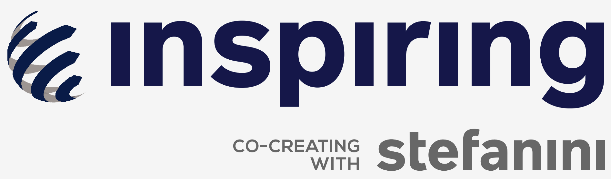

<ion-header no-border>
  <div class="inspiring">
    
  </div>
  <div class="febrafar">
    
    
  </div>
</ion-header>

<ion-content color="background">
  <ion-button
    routerLink="/"
    fill="clear"
    class="back">
    <ion-icon color="light" mode="ios" name="arrow-back"></ion-icon>
  </ion-button>
  
  <ion-grid class="ion-no-padding">
    <ion-row class="ion-no-padding">
      <ion-col size="5" class="ion-no-padding column">
        <div class="form">
          <h3>Qual o seu nome?</h3>
          <div class="input-wrapper">
            <ion-input
              (ionInput)="verifyName($event)"
              required
              [(ngModel)]="name"
              placeholder="Nome do(a) convidado(a)"
              maxLength="36"
              clear-input>
            </ion-input>
            <small
              [ngClass]="{ 'show': errorName, 'hide': !errorName }"
              class="error">
              Informe seu primeiro nome
            </small>
          </div>
  
          <h3>E sua rede?</h3>
          <div class="input-wrapper" style="height: 17vh;">
            <ion-input
              (ionInput)="verifyRede($event)"
              required
              clear-input
              maxLength="36"
              [(ngModel)]="rede_selected"
              placeholder="Nome da rede">
            </ion-input>
            <small
              [ngClass]="{ 'show2': errorRede || errorTyping, 'hide': !errorRede && !errorTyping }"
              class="error">
              {{ errorTyping ? 'Continue digitando...' : errorRede ? 'Informe a sua rede' : ''}}
            </small>
            <div class="found-list" *ngIf="found_item !== ''">
              <div class="item-found"
                   (click)="select(found_item.item.name)">
                {{ found_item.item.name }}
              </div>
            </div>
          </div>

          <ion-button
            (click)="continue()"
            mode="md"
            routerLink="/info"
            class="primario">
            <ion-icon name="arrow-forward" slot="end"></ion-icon>
            Continuar
          </ion-button>
        </div>
        <div class="detail">
          <div class="verde">
            
          </div>
          <div class="amarelo">
            
          </div>
          <div class="azul">
            
          </div>
        </div>
      </ion-col>
      <ion-col size="7" class="text">
        
        <h3 class="up-name">{{ name }}</h3>
        
        <h4 class="up-rede" [hidden]="!errorImg || rede == undefined || rede == ''">
          {{ rede }}
        </h4>
      </ion-col>
    </ion-row>
  </ion-grid>
</ion-content>
